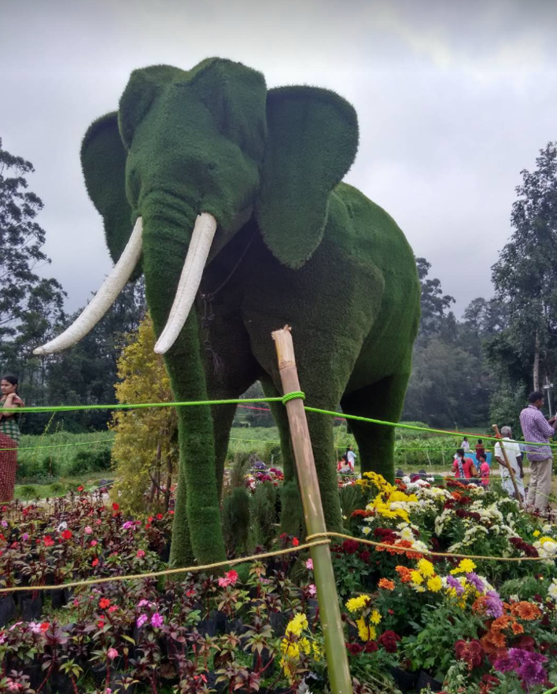
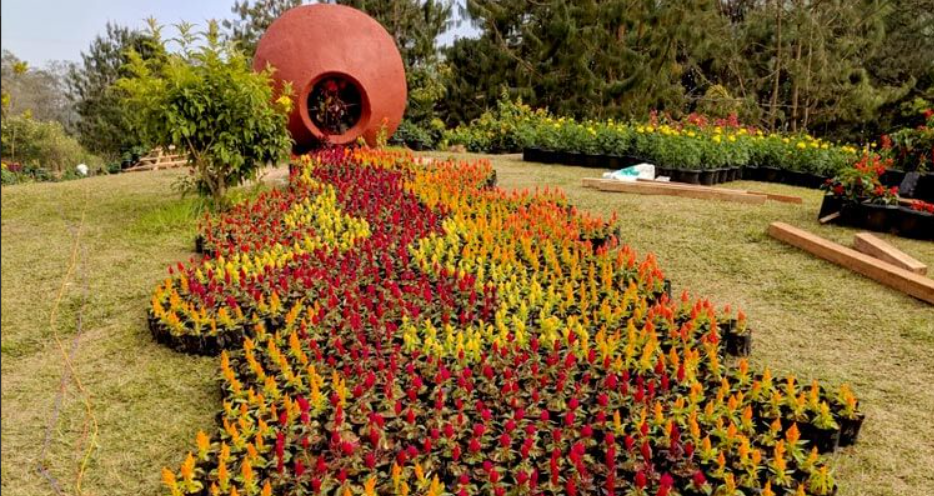
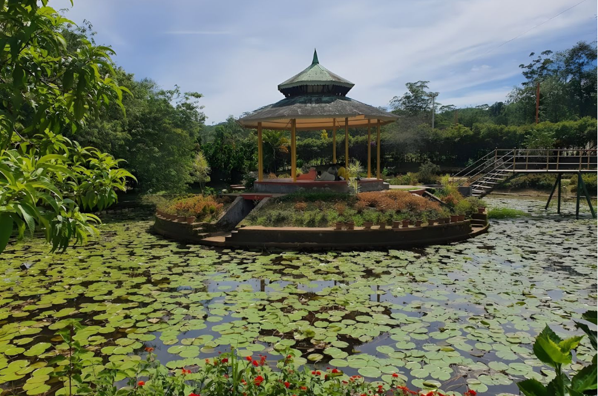
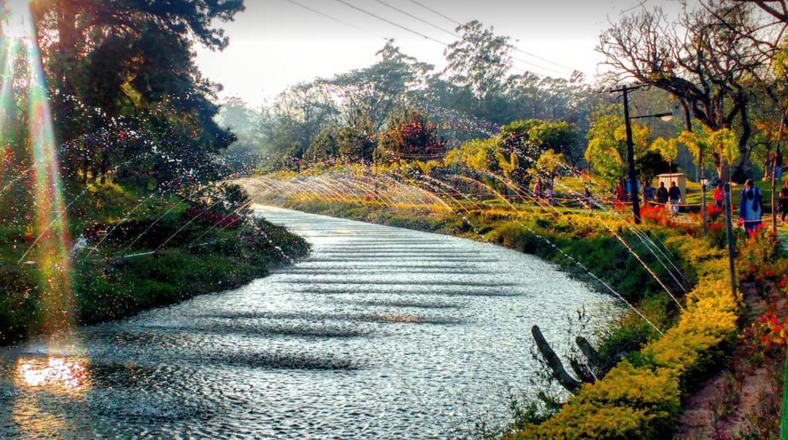
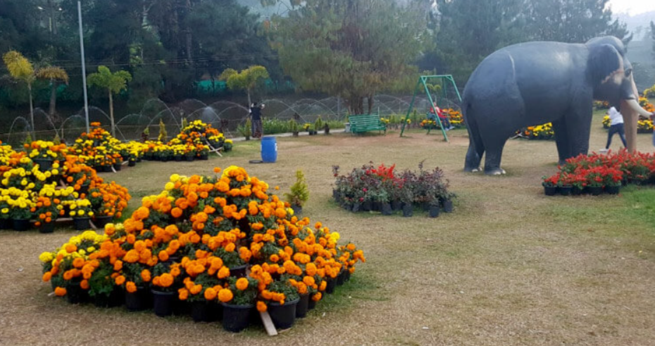

Blossom International Park is a beautiful eco-tourism park located in Munnar, Idukki district, Kerala. Spread over several acres, the park is surrounded by lush greenery, colourful flowers, and the peaceful Muthirapuzha River. It is one of the most popular family-friendly attractions in Munnar, offering a relaxing environment for visitors of all ages.
The park provides a variety of recreational activities, including cycling, boating, nature walks, bird watching, roller skating, and children's play areas. Visitors can also enjoy the well-maintained gardens, scenic landscapes, and fresh mountain air. Blossom International Park is an ideal destination for picnics, photography, and spending quality time with family and friends while experiencing the natural beauty of Munnar.





Blossom International Park, also known as Blossom Hydel Park, is one of the most beautiful parks in Munnar, Idukki District, Kerala. Located on the banks of the Muthirapuzha River, the park covers about 16 acres and is famous for its flower gardens, green lawns, boating, cycling, roller skating and breathtaking natural scenery. It is a favourite destination for families, children and nature lovers.
Blossom International Park was established in 2000 to promote tourism and nature conservation in Munnar. The park was developed as a recreational area where visitors can enjoy the natural beauty of the Western Ghats while participating in various outdoor activities. 1
The park features beautiful flower gardens, landscaped lawns, boating, cycling, roller skating, bird watching, children's play area, artificial waterfalls, nature trails and picnic spots. Visitors can also enjoy panoramic views of the surrounding hills. 2
The park contains a wide variety of flowering plants, ornamental trees, shrubs, mountain flowers and native plants of the Western Ghats. Seasonal flower displays make the park colourful throughout the year.
Today, Blossom International Park is one of Munnar's most popular tourist attractions. It welcomes thousands of visitors every year with its beautiful gardens, recreational activities and peaceful natural surroundings. 3